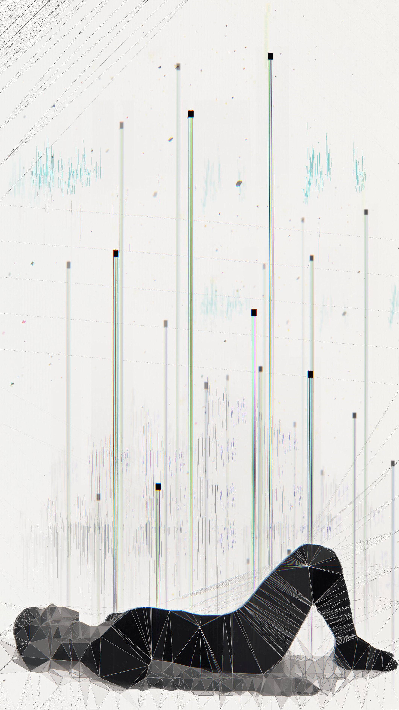
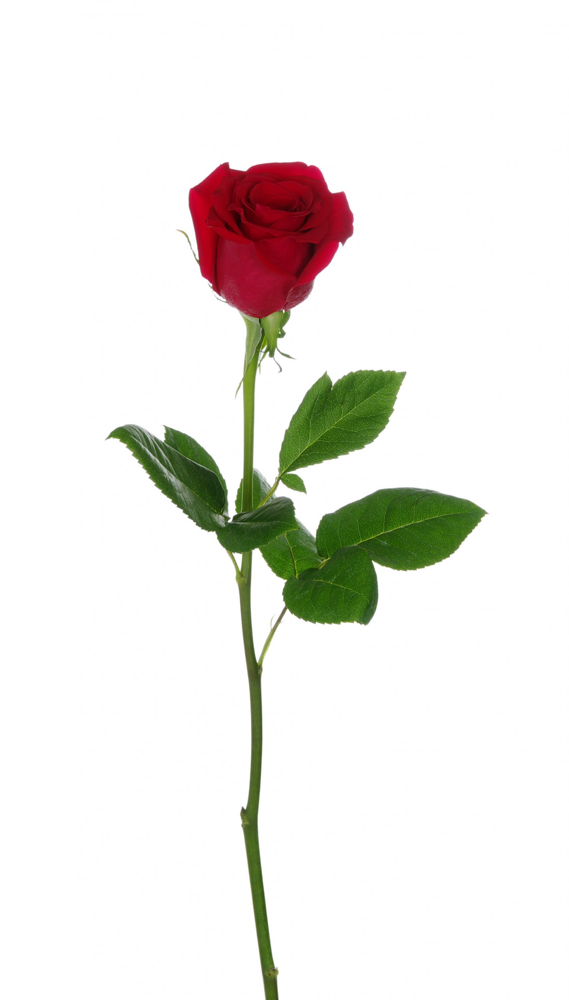

Poema
Constituye una composición de carácter literario que se enmarca en el campo de la poesía.
El texto puede estar desarrollado en verso o en prosa; en este último caso, se habla de prosa poética.
En la antigüedad, todas las composiciones literarias recibían la denominación de poema, ya que la palabra deriva del verbo griego poesin (“hacer”).
Por lo tanto, el poema era cualquier tipo de producto nacido de la literatura.
Un poema tiene cuatro elementos principales que son:
1. Verso: El verso es la división menor que se puede encontrar en un poema.
El verso debe estar en función de otros versos, formando parte primero de una estrofa y luego del poema en sí mismo.
2. Estrofa: Una estrofa es un conjunto de versos cuya forma se repite dentro del poema.
3. Ritmo: El ritmo es la musicalidad que tiene un verso.
Todo verso siempre tiene un acento, todos los acentos que coinciden son acentos rítmicos.
4. Rima: La rima es la igualdad o semejanza de sonidos finales de los versos entre sí.
Y a continuación un ejemplo de un poema:
No tengo frases de Plutón
ni versos de Neruda
solo un corazón que
de quererte no tiene duda.

Otro ejemplo de un poema titulado :
Un amor de sueños
Todo un dia normalllegar a casa y querer descanzar
agarrar la almohada y no quererla soltar
dormir y empezar a soñar
en un mundo que no se puede imaginar
con un chico que su sonrisa me brindará
y al instante me enamorará
caminando hacia una puerta que a mi realidad me llevará
que al despertar suspirando estaré
pidiendo volver a su lado otra vez
sin pensar, no puedo descanzar
y buscar un frasco que me lo permitirá
tomando algo que daño me causará
pero me permite donde mi amado estar
lastima que todos estos sueños no serán eternos
viendo que la puerta no me permitirá hacerlo
solamente soñar sin volver a despertar
asi se decidió y no hay marcha atrás.
Este poema fue inspirado en el siguiente video:
Poema Renacentista
Renacimiento significa resurgimiento de algo.
En este caso significa un nuevo resurgir de la cultura grecolatina que se había olvidado tras la caída del imperio romano.
Este movimiento social, artístico y literario surgió en Italia pero se extendió por toda Europa.
A esta época se le ha llamado Siglo de Oro; pero parece más apropiado el nombre de Edad de Oro ya que ocupa casi dos siglos: el XVI y el XVII.
El Renacimiento supuso un importante cambio social y cultural respecto a la Edad Media
Se caracteriza por la recuperación humanista de la literatura clásica grecolatina y se difunde con gran fuerza gracias a la invención de la imprenta hacia 1450.
Y a continuación un ejemplo de un Poema Renacentista titulada:
Un poema, una canción.
¡Oh ansias de mi pasión;dolores que en venir juntos
habéis quebrado los puntos
de mi triste corazón!
Con dos prisiones nos ata
el amor cuando se enciende:
hermosura es la que prende,
y la gracia es la que mata.
Ya mi alma está en pasión;
los miembros tengo difuntos
en ver dos contrarios juntos
contra un triste corazón.
De Antonio de Villegas.
Poema Místico
La poesía mística es aquella que expresa la unión espiritual entre el conjunto de la humanidad y Dios.
Surge en la segunda mitad del siglo XVI cuando, tras los inconvenientes internos en la Iglesia Católica por la reforma protestante,
la lírica religiosa se separó entre la ascética y mística.
Así la poesía mística es una forma de expresión de una vida de perfección espiritual secreta, alejada de la ordinaria, en estrecho vínculo con experiencias sobrenaturales.
En este sentido, es Dios quien eleva a las personas (y los poetas) a un lugar por sobre las limitaciones naturales, donde logran entrar en conocimiento de una experiencia superior de sentidos.

Y a continuación un ejemplo de un Poema Místico titulada:
Oh Hermosura que excedéis
¡Oh Hermosura que excedéisa todas las hermosuras!
Sin herir, dolor hacéis,
y sin dolor deshacéis,
el amor de las criaturas.
¡Oh ñudo que ansí juntáis
dos cosas tan desiguales!
No sé por qué os desatáis,
pues atado fuerza dais
a tener por bien los males.
Juntáis quien no tiene ser
con el Ser que no se acaba.
Sin acabar, acabáis;
sin tener que amar, amáis;
engrandecéis nuestra nada.
De Santa Teresa de Jesús